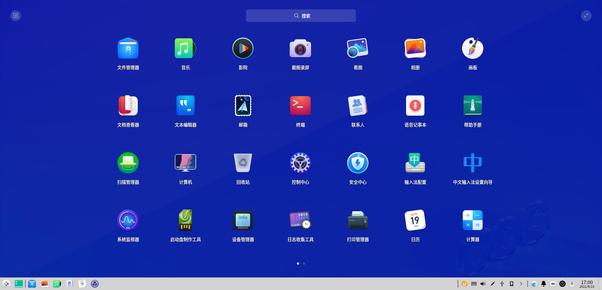
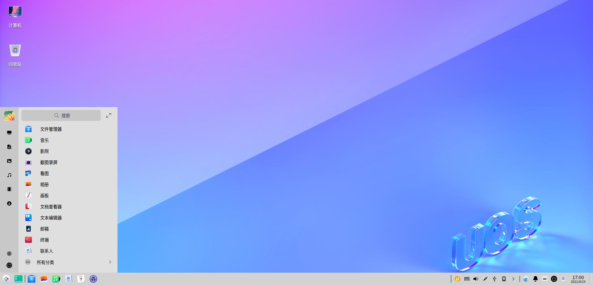
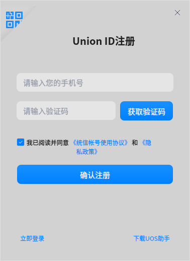

统信操作系统(简称“统信UOS”)是一款美观易用、安全可靠的国产桌面操作系统。统信UOS预装了文件管理器、应用商店、看图、系统监视器等一系列原生应用。它既能让您体验到丰富多彩的娱乐生活，也可以满足您的日常工作需要。随着功能的不断升级和完善，统信操作系统已成为国内最受欢迎的桌面操作系统之一。
桌面环境主要由桌面、任务栏、启动器、控制中心和窗口管理器等组成，是您使用该操作系统的基础。
桌面是您登录后看到的主屏幕区域。在桌面上，您可以新建文件/文件夹、排列文件、打开终端、设置壁纸和屏保等，还可以通过 发送到桌面 向桌面添加应用的快捷方式。
说明：在触控板上，四指/五指向下移动显示桌面，紧接着向上移动隐藏桌面， 对应 Super + D 快捷键。
在桌面新建文件夹或文档，也可以对文件进行常规操作，和在文件管理器中一样。
在桌面文件或文件夹上，单击鼠标右键，在弹出的菜单中主要包含如下功能：
| 功能 | 说明 |
|---|---|
| 打开方式 | 选定系统默认打开方式，也可以选择其他关联应用程序来打开。 |
| 剪切 | 移动文件或文件夹。 |
| 复制 | 复制文件或文件夹。 |
| 重命名 | 重命名文件或文件夹。 |
| 删除 | 删除文件或文件夹。 |
| 创建链接 | 创建一个快捷方式。 |
| 标记信息 | 添加标记信息，以对文件或文件夹进行标签化管理。 |
| 压缩/解压缩 | 压缩文件或文件夹，或对压缩文件进行解压。 |
| 病毒查杀 | 对文件或文件夹进行病毒查杀。 |
| 属性 | 查看文件或文件夹的基本信息，共享方式，及其权限。 |
您可以对桌面上的图标按照需要进行排序。
窍门：您也可以勾选 自动排列，桌面图标将从上往下，从左往右按照当前排序规则排列，有图标被删除时后面的图标会自动向前填充。
/
/鼠标滚动来调整桌面和启动器中的图标大小。
从桌面单击右键菜单选择“显示设置”，可以快速进入控制中心设置显示器的缩放比例、分辨率和亮度等。
### 更改壁纸 选择一些精美、时尚的壁纸来美化桌面，让您的电脑显示与众不同。
>  窍门： > - 勾选 自动更换壁纸，设置自动更换壁纸的时间间隔。您还可以设置在“登录时”和“唤醒时”自动更换壁纸。 > - 您还可以在图片查看器中设置您喜欢的图片为桌面壁纸。
窍门： > - 勾选 自动更换壁纸，设置自动更换壁纸的时间间隔。您还可以设置在“登录时”和“唤醒时”自动更换壁纸。 > - 您还可以在图片查看器中设置您喜欢的图片为桌面壁纸。
屏幕保护程序原本是为了保护显像管，现在一般用来防范他人偷窥您电脑上的一些隐私。
剪贴板展示当前用户登录系统后复制和剪切的所有文本、图片和文件。使用剪贴板可以快速复制其中的某项内容。注销或关机后，剪贴板会自动清空。

任务栏是指位于桌面底部的长条，主要由启动器、应用程序图标、托盘区、系统插件等组成。在任务栏，您可以打开启动器、显示桌面、进入工作区，对其上的应用程序进行打开、新建、关闭、强制退出等操作，还可以设置输入法，调节音量，连接网络，查看日历，进入关机界面等。
任务栏图标包括启动器图标、应用程序图标、托盘区图标、系统插件图标等。
| 图标 | 说明 | 图标 | 说明 |
|---|---|---|---|
| 启动器 - 单击查看所有已安装的应用。 | 显示桌面。 | ||
| 多任务视图 - 单击显示工作区。 | 文件管理器 - 单击查看磁盘中的文件、文件夹。 | ||
| 浏览器 - 单击打开网页。 | 商店 - 搜索安装应用软件。 | ||
| 相册 - 导入并管理照片。 | 音乐 - 播放本地音乐。 | ||
| 联系人 - 好友通讯，视频会议。 | 日历 - 查看日期、新建日程。 | ||
| 控制中心 - 单击进入系统设置。 | 通知中心 - 显示所有系统和应用的通知。 | ||
| 桌面智能助手 - 使用语音或文字来发布指令或进行询问。 | 屏幕键盘 - 单击使用虚拟键盘。 | ||
| 电源 - 单击进入关机界面。 | 回收站。 |
>  窍门：在高效模式下，单击任务栏右侧可显示桌面。将鼠标指针移到任务栏上已打开窗口的图标时，会显示相应的预览窗口。
窍门：在高效模式下，单击任务栏右侧可显示桌面。将鼠标指针移到任务栏上已打开窗口的图标时，会显示相应的预览窗口。
任务栏提供两种显示模式：时尚模式和高效模式，显示不同的图标大小和应用窗口激活效果。

您可以通过以下操作来切换显示模式：
您可以将任务栏放置在桌面的任意方向。
鼠标拖动任务栏边缘，改变任务栏高度。
任务栏可以隐藏，以便最大程度的扩展桌面的可操作区域。
当任务栏设置为“智能隐藏”或“一直隐藏”时，如果任务栏在底部，在屏幕边缘从下往上划入，唤出任务栏；如果任务栏在顶部，在屏幕边缘从上往下划入，唤出任务栏。
当有系统或应用通知时，会在桌面上方弹出通知消息。若有按钮，单击按钮执行对应操作；若无按钮，单击关闭此消息。
您还可以单击任务栏上的  ， 打开通知中心，查看所有通知。
， 打开通知中心，查看所有通知。
桌面智能助手支持语音和文字输入、查找信息、执行指令等功能。
通过桌面智能助手可以调节系统音量、屏幕亮度、还可以开启/关闭电源节能模式、WiFi或蓝牙。
使用以下方法可以唤醒桌面智能助手：
使用桌面智能助手文字输入、语音输入的操作步骤如下。


在控制中心默认设置语音听写功能，默认是开启状态，可以关闭此功能。
选中文本输入框后可通过快捷键 Ctrl + Alt + O 唤起语音听写功能，开始听写输入文本。
在控制中心设置语音朗读功能，只有开启了语音朗读功能后，才能唤起朗读。
朗读当前选中文本的操作步骤如下 。
控制中心默认开启了翻译功能，开启后才可以唤起翻译功能。
翻译当前选中文本的操作步骤如下 。
单击任务栏上的  进入关机界面，或在启动器的小窗口模式中单击
进入关机界面，或在启动器的小窗口模式中单击  。
。
| 功能 | 说明 |
|---|---|
| 关机 |
关闭电脑。 |
| 重启 |
关机后再次重新运行您的电脑。 |
| 待机 |
整个系统将处于低能耗运转的状态。 |
| 休眠 |
没有swap分区不显示此项。有swap分区的机器休眠挂载到硬盘。 |
| 锁定 |
锁定电脑，按下快捷键 Super + L 锁定。 |
| 切换用户 |
选择另一个用户帐户登录。 |
| 注销 |
清除当前登录用户的信息。 |
| 系统监视器 |
快速启动系统监视器。 |
。
电脑中临时被删除的所有文件您都可以在回收站中找到，回收站中的文件可以被恢复或清空。
对于已删除的文件，您可以进入回收站进行还原，或使用 Ctrl + Z 还原刚删除的文件。
注意：如果原来所在的文件夹已经删除，还原文件时会自动新建文件夹。
回收站中可以单独清除某一文件。
在回收站中，单击 清空，将彻底删除回收站的所有内容。
启动器  帮助您管理系统中已安装的所有应用，在启动器中使用分类导航或搜索功能可以快速找到您需要的应用程序。
帮助您管理系统中已安装的所有应用，在启动器中使用分类导航或搜索功能可以快速找到您需要的应用程序。
您可以进入启动器查看新安装的应用。新安装应用的旁边会出现一个小蓝点。
启动器有全屏和小窗口两种模式。单击启动器界面右上角的图标来切换模式。
两种模式均支持搜索应用、设置快捷方式等操作。
小窗口模式还支持快速打开文件管理器，控制中心和进入关机界面等功能。

在全屏模式下，系统默认按照安装时间排列所有应用。

在小窗口模式下，默认按照使用频率排列应用。
在启动器中，您可以滚动鼠标滚轮或切换分类导航查找应用。
如果知道应用名称，直接在搜索框中输入关键字，快速定位到需要的应用。
快捷方式提供了一种简单快捷地启动应用的方法。
将应用发送到桌面或任务栏上，方便您的后续操作。
在启动器中，右键单击应用图标，您可以：
单击 发送到桌面，在桌面创建快捷方式。
单击 发送到任务栏，将应用固定到任务栏。

您既可以在桌面直接删除应用的快捷方式，也可以在任务栏和启动器中删除。
从任务栏上删除
从启动器中删除
在启动器中，右键单击应用图标，您可以：
如果启动器中没有您需要的应用，可以在应用商店一键下载安装。
对于已经创建了桌面快捷方式或固定到任务栏上的应用，您可以通过以下途径来打开应用。
在启动器中，直接单击应用图标打开，或右键单击应用图标选择 打开。
对于不再使用的应用，您可以选择将其卸载，以节省硬盘空间。
中卸载应用。
统信操作系统通过控制中心来管理系统的基本设置，包括帐户管理、网络设置、日期和时间、个性化设置、显示设置、系统升级等。当您进入桌面环境后，单击任务栏上的  即可打开控制中心窗口。
即可打开控制中心窗口。
控制中心首页主要展示各个设置模块，方便日常查看和快速设置。
打开控制中心的某一设置模块后，可以通过左侧导航栏快速切换到另一设置模块。
标题栏包含返回按钮，搜索框，主菜单及窗口按钮。
在安装系统时会创建一个账户，在控制中心的账户设置模块可以修改账户设置或创建一个新账户。
帐户全名会显示在帐户列表和系统登录界面，可根据需要设置。
开启“自动登录”后， 下次启动系统时（重启、开机）可直接进入桌面。在锁屏和注销后再次登录需要密码。 1. 在控制中心首页，单击 。 2. 单击当前帐户。 3. 打开 自动登录 开关，开启自动登录功能。
。 2. 单击当前帐户。 3. 打开 自动登录 开关，开启自动登录功能。
开启“无密码登录”后，下次登录系统时（重启，开机，和在注销后再次登录），不需要密码，单击 登录 按钮 即可登录系统。 1. 在控制中心首页，单击
即可登录系统。 1. 在控制中心首页，单击 。 2. 单击当前帐户。 3. 打开 无密码登录 开关，开启后可以不用输入密码登录系统。
。 2. 单击当前帐户。 3. 打开 无密码登录 开关，开启后可以不用输入密码登录系统。
指纹密码可以用来登录系统、解锁屏幕、特殊操作授权。当需要输入帐户密码时，请扫描您的指纹。
注册并登录Union ID后，您可以使用云同步、应用商店、邮件客户端、浏览器等相关云服务功能。
开启云同步，可以自动同步各种系统配置到云端，如网络、声音、鼠标、更新、任务栏、启动器、壁纸、主题、电源等。若想在另一台电脑上使用相同的系统配置，只需登录此Union ID帐户，即可一键同步配置。
如果您尚未注册Union ID，可以先进行注册，注册成功并登录后，才能使用Union ID相关的功能。
弹出Union ID注册窗口，使用微信扫描注册、手机号码进行注册或在官网进行注册。
注册成功后，即可登录Union ID。
登录Union ID后，单击 修改资料，可以配置用户名、手机号码、邮箱、密码、微信等帐号信息。
设置显示器的分辨率、亮度、屏幕方向以及缩放倍数，让您的电脑显示到达最佳状态。
当桌面和窗口显示过大或过小时，您可能需要调节屏幕缩放，以便正常显示。
多屏显示，让您的视野无限延伸！使用VGA、HDMI、EDP等线缆将您的电脑和另一台显示器、投影仪等连接起来，同时在多个屏幕显示您电脑上的内容。
在多屏环境下，按下 Super + P 调出多屏显示模式的OSD。
详细操作方法如下。
当接入触控屏时，您可以设置所在屏幕，并对其进行调整。
当安装有多个功能相似的应用程序时，可以通过右键菜单或控制中心为某种类型的文件指定其中的一个应用作为打开文件的默认启动程序。
在默认程序列表中，您只能删除自己添加的应用程序，不能删除系统已经安装的应用。要删除系统已经安装的应用，只能卸载应用。卸载后该应用将自动从默认程序列表中删除。
可用以下方法删除自己添加的默认程序。
在控制中心个性化设置模块可以进行一些通用的个性化设置，包括系统主题、活动用色、字体、窗口特效和透明度，改变桌面和窗口的外观。除此之外还可设置图标主题、光标主题和字体。
活动用色是指选中某一选项时的强调色。
开启窗口特效可以让桌面和窗口更美观精致。
您可以设置任务栏、和启动器（小窗口模式）的透明度。滑块越靠左越透明，越靠右越不透明。
登录系统后，您需要连接网络，才能接收邮件、浏览新闻、下载文件、聊天、网上购物等。
有线网络安全快速稳定，是最常见的网络连接方式。当您设置好路由器后，把网线两端分别插入电脑和路由器，即可连接有线网络。
您还可以在有线网络的设置界面，编辑或新建有线网络设置。
无线网络帮助您摆脱线缆的束缚，上网形式更加灵活，支持更多设备使用。
为了防止他人扫描到自己的WiFi，进而破解WiFi密码连接您的网络，您可以在路由器设置界面隐藏无线网络。设置后，您需要手动连接隐藏网络才能上网。
无线热点将电脑连接的网络信号转换为WiFi热点，以供一定距离内的其他设备无线上网。要开启无线热点，电脑必须连接到网络并装有无线网卡。
当您处于一个没有网络信号的地方时，可以使用无线上网卡来上网。在有电话信号覆盖的任何地方，无线上网卡通过运营商的移动数据网络接入宽带服务。
拨号上网（DSL）是指通过本地电话拨号连接到网络的连接方式。配置好调制解调器，把电话线插入电脑的网络接口，创建宽带拨号连接，输入运营商提供的用户名和密码，即可拨号连接到Internet上。
VPN即虚拟专用网络，其主要功能是在公用网络上建立专用网络，进行加密通讯。无论您是在外地出差还是在家中办公，只要能上网就能利用VPN访问企业的内网资源。您还可以使用VPN加速访问其他国家的网站。
在网络详情界面，您可以查看MAC、IP地址、网关和其他网络信息。
设置通知勿扰模式，开启或关闭某些应用的通知显示。
设置系统通知的勿扰模式及是否在任务栏显示通知图标。
在控制中心首页，单击  。
。
单击 系统通知，进入系统通知界面。
自定义设置个性化的应用通知显示。
输入输出设备声音的设置（如设置扬声器和麦克风），让您听得更舒适，录音更清晰。
蓝牙能够实现短距离的无线通信。通过蓝牙无需网络或连接线就可以与附近的其它蓝牙设备连接。常见的蓝牙设备包括：蓝牙键盘、蓝牙鼠标、蓝牙耳机、蓝牙音响等。
UOS PC与非UOS PC或者UOS PC与移动设备（手机/平板）之间通过蓝牙设备传送/接收文件。
前提条件：发送端蓝牙设备与接收端蓝牙设备已配对并连接成功。
使用UOS PC端蓝牙传送文件
场景：发送端（UOS PC）通过蓝牙向接收端（非UOS PC/手机/平板）传送文件。
使用手机端蓝牙传送文件
场景：发送端（以安卓手机为例）通过蓝牙向接收端（UOS PC）传送文件。
使用蓝牙接收文件
发送端发送文件后，接收端弹出提示窗口，用户可以单击 接受 或 拒绝 文件。
选择正确的所在时区，即可在电脑上显示所在地的时间和日期，也可以手动修改时间和日期。
在您安装系统时，已选择了系统时区。若要修改系统时区，请按如下步骤设置。
您可以同时使用多个时区，以便查看另一时区的时间。
默认情况下，系统通过网络自动同步该时区的本地时间和日期。您也可以手动修改时间和日期。手动设置后，自动同步功能会被关闭。 1. 在控制中心首页，单击  。 2. 单击 时间设置 。 3. 关闭 自动同步配置。 4. 设置正确的时间和日期。 5. 单击 确定。
。 2. 单击 时间设置 。 3. 关闭 自动同步配置。 4. 设置正确的时间和日期。 5. 单击 确定。
系统支持即时设置时间日期的格式。
对系统电源进行一些设置，让笔记本电池更耐用，让系统更安全。
为降低电脑的耗电量，您可以对节能模式进行设置，降低屏幕亮度。
更改设置后会即时生效，并有通知提示。
通过拖拽低电量滑块，调节低电量的阈值；或通过拖拽自动待机电量滑块，调节待机电量的阈值。
鼠标和触控板是电脑常用的输入设备。使用鼠标，可以使操作更加简便快捷。对于笔记本电脑用户，当没有鼠标时，也可以使用触控板代替鼠标进行操作。部分设备还支持指点杆，使用指点杆不需要将手指从基准键上移开便能操纵鼠标。在控制中心鼠标设置模块，用户可以对鼠标、触控板和指点杆进行设置，从而让设备使用体验更加符合自己的使用习惯。
插入或连接鼠标后，在控制中心进行相关设置，让其更符合您的使用习惯。
若您使用的是笔记本电脑，可以在 鼠标 > 通用 界面开启 输入时禁用触控板，在 鼠标 > 鼠标 界面开启 插入鼠标时禁用触控板，以避免误触触控板。
您还可以调节触控板的 指针速度，控制手指移动时指针移动的速度；开启自然滚动，变更滚动方向。
指点杆，常称为小红帽，是一种主要应用于笔记本电脑的定点设备，可用来控制指针的移动。
数位板，又名绘图板、绘画板、手绘板等，主要用作绘画创作，是计算机的一种输入设备。 连接到电脑后，可以设置数位板的压感力度，即笔尖和橡皮擦的压力感应值。
在此模块可以设置键盘属性，以便符合个人的输入习惯，还可以根据国家和语言调整键盘布局，设置系统语言，以及自定义快捷键。
键盘布局可以为当前语言设置自定义键盘。完成键盘布局设置后，按下键盘上的按键，屏幕上会按照键盘布局设置好的字符进行显示。更改键盘布局后，屏幕上的字符可能与键盘按键上的字符不相符。
一般在安装系统时就已经设置了键盘布局，可以根据需求添加或删除其他的键盘布局。
系统语言默认为安装系统时所选择的语言，可以随时进行更改。在系统语言列表可以添加多个语言，以便切换系统语言。
您可以添加多个语言到系统语言列表，以便切换系统语言。
快捷键列表显示了系统所有的快捷键，在这里查看、修改和自定义快捷键。
。若要取消修改快捷键，按下 Esc， 或单击下方的“恢复默认”按钮。
您可以为常用的应用自定义一个快捷键。
，进入修改页面。
在辅助功能界面，您可以设置桌面智能助手、语音听写、语音朗读、文本翻译等相关的功能。
桌面智能助手可通过语言命令，帮助您处理各项事务，如查看天气、新建日程等。
设置语言：中文-普通话
语音检测： 可以检测语音输入状态是否正常。
当系统存在更新时会在控制中心首页进行提示，单击 更新 按钮  进入 更新 页面，单击 检查更新，检查完毕后，即可进行下载和安装更新。除此之外，在更新设置模块中还可以设置自动下载更新。
进入 更新 页面，单击 检查更新，检查完毕后，即可进行下载和安装更新。除此之外，在更新设置模块中还可以设置自动下载更新。
查看系统版本、版本授权和电脑硬件等信息，以及该系统的一些协议。
授权管理是公司自研的一款工具，帮助您激活系统。
运行授权管理工具有以下方式：
会一直显示在系统托盘。
在授权管理界面，单击 立即激活，弹出激活UOS窗口，您可以使用微信扫描激活系统。
系统激活成功后，在“控制中心 > 系统信息 > 关于本机”中，单击 查看 可以查看授权管理信息。
如果当前激活服务器出现异常或崩溃了，通过授权管理界面，单击主菜单  中的 设置，可以自定义新的激活服务器。
中的 设置，可以自定义新的激活服务器。
为避免因软件缺陷、硬件损毁、人为操作不当、骇客攻击、电脑病毒、自然灾害等因素造成数据缺失或损坏，可以进行应用数据或系统数据的备份还原，以保障系统的正常运行。
统信UOS提供初始化备份、控制中心备份的备份方式。
在系统安装时，如果选择全盘安装，会先自动创建恢复分区，并在后续安装过程中备份启动分区和根分区。
在控制中心，用户可以通过全盘备份或系统备份来备份数据。
选择 备份/还原 > 备份，设置备份模式和备份文件的保存路径。 备份模式：全盘备份、系统备份
统信UOS支持从Grub、控制中心进行数据还原。
在开机时，在选择系统界面，单击 系统还原，进入统信UOS系统还原。用户可以选择“恢复出厂设置”读取安装时的初始化备份，也可以选择“自定义恢复”恢复已创建的历史还原点。
用户既可以恢复出厂设置，也可以自定义恢复还原前期备份的数据。
选择 备份/还原 > 还原，您可以选择：
通用设置模块下包括启动菜单、开发者模式和用户体验计划等信息。
启动菜单，指的是开机后选择操作系统的菜单。选择某一系统后，计算机就会引导进入该操作系统。
当设备中存在多个系统时，“启动延时”默认开启，开机后在启动菜单停留5秒钟，您可以在启动菜单单击要进入的系统。
当设备中仅存在一个系统时，“启动延时”默认关闭，开机后在启动菜单停留1秒钟，不需要进行选择。
进入开发者模式您可以使用root权限，执行sudo操作，安装和运行未在应用商店上架的非签名应用。系统默认未进入开发者模式。
用户体验计划会收集用户的硬件信息、应用信息和系统信息，收集到的信息方便研发团队改善用户最常使用的功能，并帮助解决软件操作过程遇到的问题，从而更好地满足用户的需求、提升用户体验。 为了更好地使用该系统，建议用户开启用户体验计划，该计划可以随时参与或退出。
窗口管理器可以在不同的工作区内展示不同的窗口内容。通过窗口管理器您可以同时使用多个桌面，以便对桌面窗口进行分组管理。

工作区将您的桌面窗口进行分组管理，通过划分工作区可以增大您的工作区域。
按下Super + S 组合键，或单击  打开工作区界面。
打开工作区界面。
在工作区界面，您可以通过以下方式添加工作区。
在桌面和工作区界面，您可以通过以下方式切换工作区。
当您执行删除工作区操作后，该工作区中的所有窗口将自动转移到相邻的工作区中显示，当桌面环境中只存在一个工作区时，将不能执行删除工作区的操作。
当您在工作区界面完成相关操作后，可以通过以下方式退出工作区。
您可以通过以下方式查看工作区的所有窗口。
您可以通过以下方式移动窗口到另一工作区。
您可以通过以下方式切换当前工作区的桌面窗口。
同时按下 Alt + Tab 并快速释放，快速切换当前窗口和相邻程序窗口；
同时按下 Alt + Shift + Tab 并快速释放，快速反向切换当前窗口和相邻程序窗口。
同时按下 Alt +  并快速释放，快速切换当前同类型窗口；
并快速释放，快速切换当前同类型窗口；
同时按下 Alt + Shift +  并快速释放，快速反向切换当前同类型窗口。
并快速释放，快速反向切换当前同类型窗口。
按住键盘上的 Alt 键不放，连续按下键盘上的 Tab 键，所有窗口依次向右切换显示；
按住键盘上的 Alt + Shift 键不放，连续按下键盘上的 Tab 键，所有窗口依次向左切换显示。
按住键盘上的 Alt 键不放，连续按下键盘上的  键，当前同类型窗口依次向右切换显示；按住键盘上的 Alt + Shift 键不放，连续按下键盘上的
键，当前同类型窗口依次向右切换显示；按住键盘上的 Alt + Shift 键不放，连续按下键盘上的  键，窗口依次向左切换显示。
键，窗口依次向左切换显示。
使用窗口分屏，让多个应用和任务窗口同时显示在大屏幕上，既充分利用了大屏幕的空间，又能减少在多个应用窗口之间频繁切换，提高您的工作学习效率。